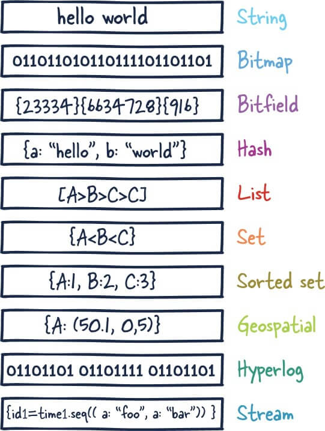

Redis Backend
Last updated: Jun 27, 2024Table of Contents
Redis FAQ (Backend)
Redis data structure

- 5 種基礎資料類型：String（字串）、List（列表）、Set（集合）、Hash（雜湊）、Zset（有序集合） - 3 種特殊資料類型：HyperLogLog（基數統計）、Bitmap （點陣圖）、Geospatial (地理位置)Redis部署模式
- 主從複製模式 (Master-Slave Replication)
- 哨兵模式 (Sentinel)
- 叢集模式 (Cluster)
- https://hackmd.io/@tienyulin/redis-master-slave-replication-sentinel-cluster
Why redis is fast?
- https://blog.csdn.net/CSDN2497242041/article/details/120755188
- https://boilingfrog.github.io/2022/01/07/为什么redis的查询比较快/